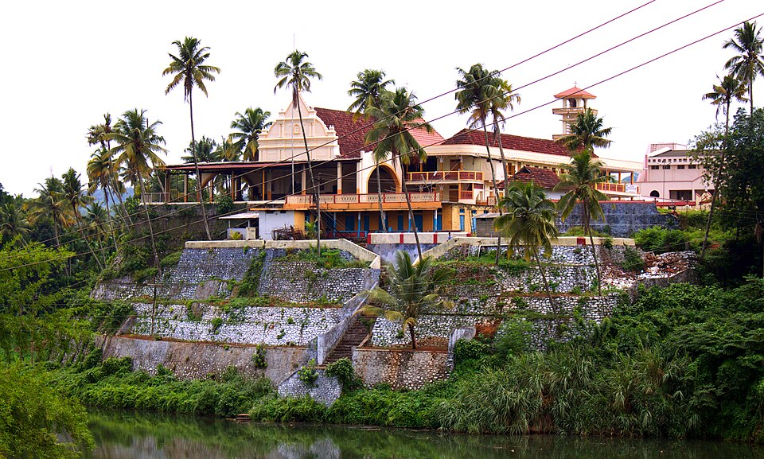

Perumthrkkovil Pazhor
view more

Piravom Valiyapally
view more
Piravom is a municipality in the Ernakulam district, Kochi, Kerala, India. The block is located 22 km south of the district collectorate near the Thrikkakara and 162 km north of the capital of the state, Thiruvananthapuram. According to the Census report, the block has a population of around 27,229 people. The population density is around 927/km2.
Piravom is popular, being an urban area, and is home to various temples and heritage places. Its strategic location makes it a hub for all commercial activities in the city of Kochi. The block is also reputed for good hotels and restaurants, and it is very popular with the Muvattupuzha River. The banks of the river make way for an ideal cluster of tourist places here, including various bridges and shorelines.